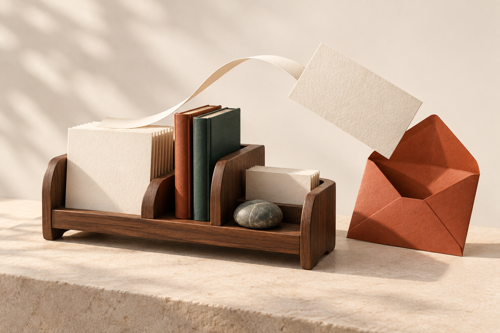
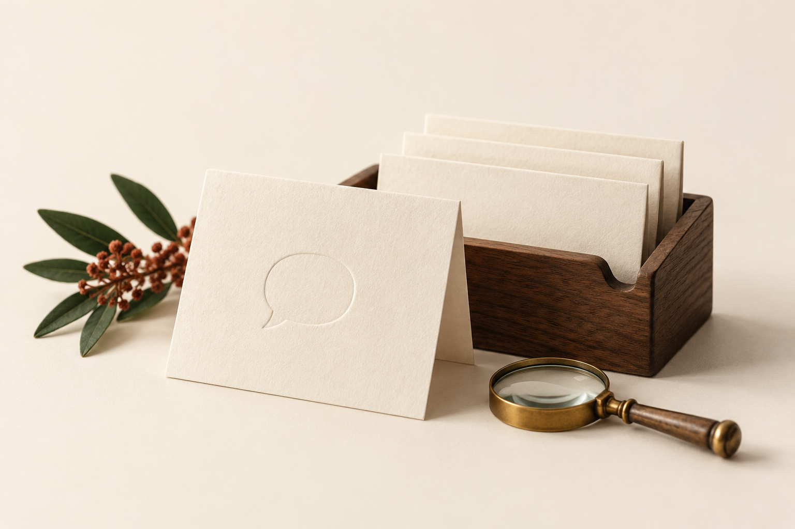

Keep the good answers.
Save a reply you’ve reviewed. Give future you a head start.
Good answers deserve a second life.
Find yours by meaning, even when
the question sounds different.

TAKE IT FOR A SPIN

Ask a question. We’ll look through your
saved answers for a familiar meaning.
Save a reply you’ve reviewed. Give future you a head start.
Meaning is matched in your browser. Your questions stay here.
Review the match. Copy the reply. Make it personal.
Your reviewed answers, ready for another day.
ReplyShelf turns each saved question and your new question into a 384-number representation. The closest meanings rise to the top. The reply itself is always your exact saved text.
AI runs in a browser worker using all-MiniLM-L6-v2 (Apache-2.0) and Transformers.js (Apache-2.0). No API key, paid inference service, or AI account required.
The fixed model and runtime files are served by this site. First use downloads about 46 MB of AI assets; internet is needed initially. Questions and saved answers are processed on your device. The app uses no external fonts or AI inference requests. Hosting may keep normal access logs. Cache availability varies; offline operation is not guaranteed.
English works best. Similarity is a ranking signal, not a probability of correctness. Below 0.42, the app withholds a ready-to-copy reply. A gap below 0.06 flags ambiguity. These are hand-set heuristics, not validated safety guarantees. Always review the full answer, dates, and policy.
Shelf data lives in this browser’s local storage, without app-level encryption or cross-device sync. Browser clearing removes it. Export a backup; don’t keep secrets or sensitive customer records here.
Product illustrations were generated with AI for this project. The artwork contains no real customer data.
Eight fixed, synthetic English paraphrases, plus three unrelated questions. Compare semantic retrieval with a simple word-overlap baseline on the same sample shelf.
No scores until you run it. Small demonstration, not a general accuracy claim.